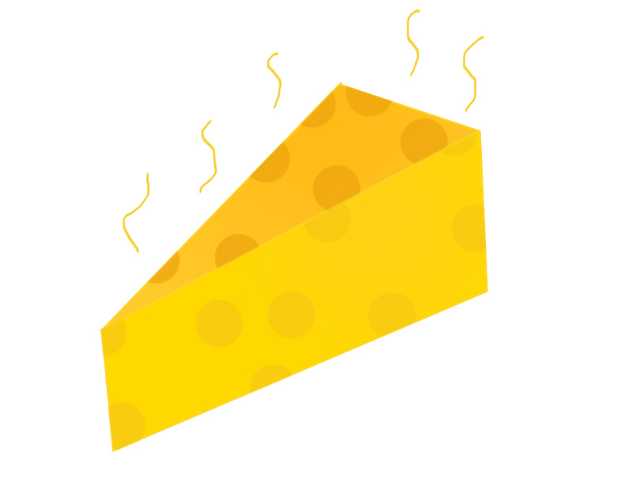
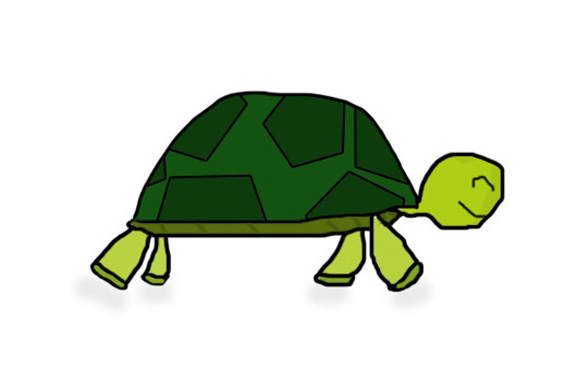

So what is plagiarism anyways? Is it Cheese?
NO!

A turtle?

What?! NO!!
We will look into this question in detail…
Most people think of plagiarism as the replication of someone else’s work, or the borrowing of another’s work. However, the real meaning of this criminal term is quite worse.
According to “www.tfd.com”, plagiarism is, “The verbatim copying or imitation of the language, ideas, or thoughts of another author and representing them as one’s own original work.”
Basically, plagiarism is a form of deception. It means stealing another’s ideas and being untruthful about it.